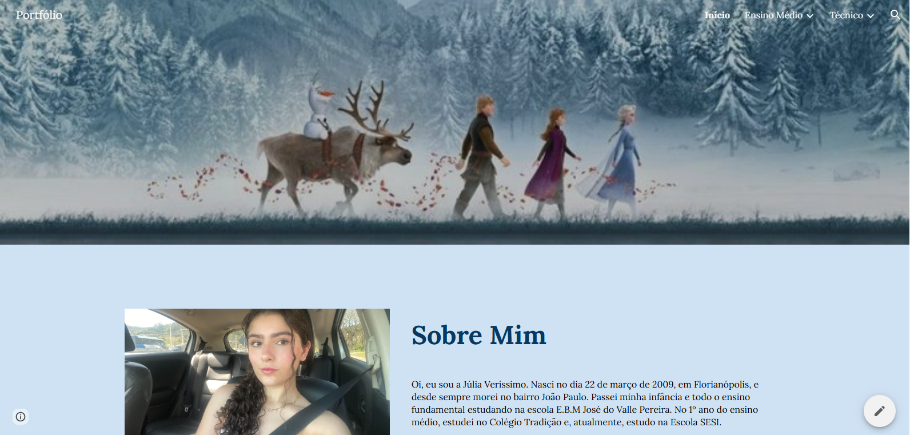

Prazer eu sou a Júlia Veríssimo. Nasci no dia 22 de março de 2009, em Florianópolis, e desde sempre morei no bairro João Paulo. Passei minha infância e todo o ensino fundamental estudando na escola E.B.M José do Valle Pereira. No 1º ano do ensino médio, estudei no Colégio Tradição e, atualmente, estudo na Escola SESI. A música é algo muito presente na minha vida. Entre meus cantores favoritos estão Taylor Swift, Sabrina Carpenter, Olivia Rodrigo, Tate McRae, Michael Jackson, Ariana Grande, Lana Del Rey e Billy Joey. Também gosto muito de artistas nacionais como Rita Lee, Charlie Brown Jr. e Marisa Monte. Quando se trata de livros, eu gosto especialmente de histórias de suspense, que me prendem do começo ao fim, e também de romances leves e divertidos, que trazem um toque de comédia romântica. Ler sempre foi uma forma de me distrair, aprender e imaginar novos mundos.
Meu objetivo é ser aprovado no curso de Medicina e, futuramente, especializar-me em Pediatria, área com a qual me identifico por envolver cuidado, atenção e sensibilidade no atendimento às crianças. Pretendo construir uma trajetória sólida na área da saúde, pautada na dedicação, na responsabilidade e no compromisso com a vida, buscando sempre aprimorar meus conhecimentos e práticas profissionais. Além disso, almejo conquistar estabilidade financeira e qualidade de vida, de forma equilibrada, para poder exercer minha profissão com segurança e tranquilidade. Mais do que uma realização pessoal, desejo contribuir de maneira significativa para o bem-estar das pessoas, oferecendo um atendimento humanizado e fazendo a diferença na vida dos pacientes e de suas famílias.

